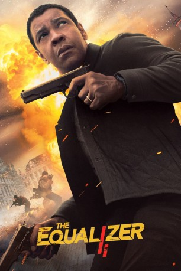

#9842 The Equalizer 2
 gesehen am 02.11.2018
gesehen am 02.11.2018
 
 IMDB-Wertung: 6.9 / 10
IMDB-Wertung: 6.9 / 10  Metascore: 50
Metascore: 50 
In The Equalizer hatte Robert McCall seines Zeichens Ex-Special-Agent eines Undercover-Kommandos, den eigentlich wohlverdienten Ruhestand verlassen, um einer jungen Prostituierten zur Seite zu stehen, weil diese Hilfe benötigte. In The Equalizer 2 hat Robert McCall nun erkannt, dass es für einen Mann seines Kalibers und seiner Fähigkeiten keine Rente gibt. Und so zieht er erneut für die Schwachen und gegen die Starken in den Kampf, um als Equalizer, als “Gleichgewichtsbringer”, für Gerechtigkeit zu sorgen.
Jahr: 2018
Dauer: 121 Minuten
FSK: 16
Land: USA Studio: Columbia Pictures CorporationTonspuren: DD5.1 - ,
Untertitel: Deutsch, Englisch,
Auflösung: 1080p (1920x800) Größe: 11776 MB
Genre: Action, Thriller, Krimi
Regisseur:  Antoine Fuqua
Antoine Fuqua
Drehbuch: Richard Wenk, Michael Sloan, Richard Lindheim
Soundtrack: Harry Gregson-Williams
Darsteller:
 Denzel Washington als Robert McCall
Denzel Washington als Robert McCall Pedro Pascal als Dave York
Pedro Pascal als Dave York- Ashton Sanders als Miles Whittaker
 Orson Bean als Sam Rubinstein
Orson Bean als Sam Rubinstein Bill Pullman als Brian Plummer
Bill Pullman als Brian Plummer Melissa Leo als Susan Plummer
Melissa Leo als Susan Plummer Jonathan Scarfe als Resnik
Jonathan Scarfe als Resnik Sakina Jaffrey als Fatima
Sakina Jaffrey als Fatima- Kazy Tauginas als Ari
- Garrett Golden als Kovac
- Adam Karst als Turkish Father
- Alican Barlas als Dining Car Porter
- Rhys Olivia Cote als Nine Year Old Braelick Girl
 Tamara Hickey als Grace Braelick
Tamara Hickey als Grace Braelick- Colin Allen als Bookstore Nerd
- Antoine de Lartigue als Mr. Calbert (Belgian Husband)
- Abigail Marlowe als Jana Calbert (Belgian Wife)
- Jim Loutzenhiser als Interpol Agent
- Alessandra Noelle Rosenfeld als Lyft Girl (8 Yrs)
- Rex Baning als Lyft Boy (8 Yrs)
- Caroline Day als Amy
- Rory Benjamin Smith als Hart Schaffer (Co-Op)
- Ted Arcidi als Big Ernie
 Jay Hieron als Harried Man
Jay Hieron als Harried Man- Phil Tavares als State Trooper
- Tim Doherty als State Trooper
- Cj Stuart als Belgian Backpacker
- Donald Cerrone als Belgian Backpacker
- Karen Strong als Carol York
- Marley Dauphin als Molly York
- Elena Capaldi als Alice York
- Miguel Nascimento als Lyft Passenger Young Soldier
- Johnny L. Hernandez als Valet
 Kristen Annese als Jogger (uncredited)
Kristen Annese als Jogger (uncredited)- Andrei Arlovski als Russian Mobster (uncredited)
 Ralph Ayala als Neighborhood Resident (uncredited)
Ralph Ayala als Neighborhood Resident (uncredited)- Eliane Brick als Pedestrian (uncredited)
- Paul Bronk als Detective (uncredited)
- John J. Burke als Hotel Guest (uncredited)
 Dj Nino Carta als Young G (uncredited)
Dj Nino Carta als Young G (uncredited)- Kayla Caulfield als Bookstore Patron (uncredited)
- Bruce Chester als Pedestrian (uncredited)
- Jay Dunigan als Businessman (uncredited)
 Manny Famolare als Apartment Resident (uncredited)
Manny Famolare als Apartment Resident (uncredited) Alan Francis als Hotel Doorman (uncredited)
Alan Francis als Hotel Doorman (uncredited)- Heidi Garrow als Wall Street Business Woman (uncredited)
 Mickey Gilmore als Interpol Agent (uncredited)
Mickey Gilmore als Interpol Agent (uncredited)- Alexa Giuffre als Woman Lyft passenger (uncredited)
 Ed Goode als Wash DC Tourist (uncredited)
Ed Goode als Wash DC Tourist (uncredited) Elaine Victoria Grey als Tourist (uncredited)
Elaine Victoria Grey als Tourist (uncredited)
Datei: X:\2-Dilogie(A-F)\Equalizer\Equalizer 2, The (2018, FSK16, 1920x800).mkv seit 30.10.2018
Festplatte: HD Collection-2(A-Z)-3(A-M)
 Alle Filme aus Gruppe '2-Dilogie(A-F)\Equalizer'
Alle Filme aus Gruppe '2-Dilogie(A-F)\Equalizer'